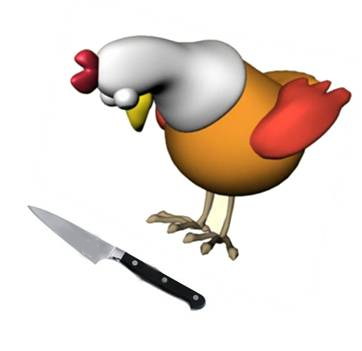
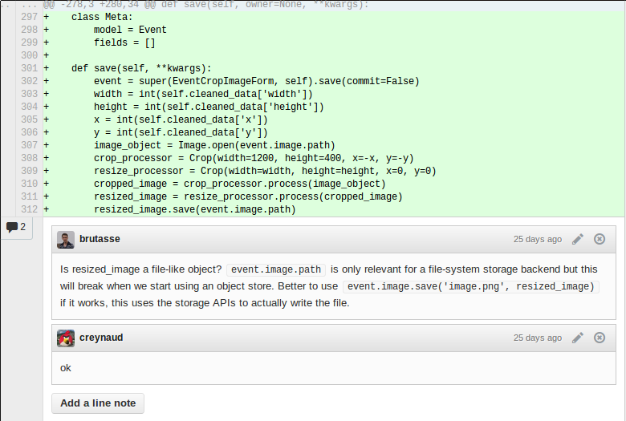

Débuter en Python et Django
The noob, the mad and the pony
@
5 minutes / 3 mois
=Trango VP= =VMWare=
=VMWare=
AbstractSingletonProxyFactoryBean
=Epyx= =Ma vie, mon oeuvre= * Beaucoup de Java[slide] * De l'embarqué et du mobile[slide] * Du Linux[slide] * Du backend, services REST[slide] * Pas de python[slide] * Pas de web, javascript, css[slide] ==The noob, the mad and the pony==[title] ==Python==[title] =Des problèmes de noob= * Python 3[slide] * Backward compatibility[slide] * Virtualenv[slide] =Des problèmes de noob qui vient du Java= =Des problèmes de noob qui vient du Java= * Autocompletion :/[slide] * 80 caractères[slide] * len(truc) mais truc.machin() ?[slide] =Des choses cools aussi :)= * Simple[slide] * Concis...[slide] * ...mais étonnament compréhensible[slide] * Pas 10 façons d'écrire la même chose[slide] ==Django==[title] =Beaucoup de choses à apprendre= * Python[slide] * Django[slide] * HTML[slide] * CSS[slide] * Javascript[slide] =Packages=Lequel choisir ?
=settings.py=Chemins absolus ?
=settings.py=Certes, ce n'est pas du xml, mais...
=models.py=Du pseudo sql qui n'en est pas
=Meta=O_o
=Class Based Views= =Angry Noob= =Current transaction is aborted= =Templates, appels de méthodes et filtres= * Pourquoi est-ce qu'on ne peut pas appeller de méthodes dans les templates ?[slide] * "Hum, je vais mettre ça dans le contexte"[slide] * Définition de filtres ?[slide] =Debug=False=??
=Command line= =Magic powers= =Modifié : hop, reloadé != =Infos de debug dans le navigateur= =L'admin=Plus besoin d'aller grailler dans la DB en prod, \o/ !!
=Django Debug Toolbar=<3
Pas là par défaut :(
=Web= =Tests full stack=
=Tests full stack=
Sans mocks, sans selenium
=Pycharm= ==Django: life, the universe and everything==[title] =Django et javascript=Ça se combine bien ?
=Django et javascript=Real time web ?
=Django et javascript=Mobile web apps + offline ?
=DjangoCon Europe= ==Que faire pour que l'apprentissage se passe bien ?==[title] =Que faire ?=Note: pas spécifique à Python/Django
Ça marche encore quand le noob est devenu une star du rock ;)
=Revues de code=  =Tests= =Django, je recommande à une copine ?=Ouiiii !!
==Merci :) !==[title]Django noob − Claire Reynaud − /
← →